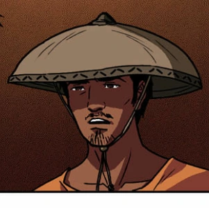

| CRISOSTOMO IBARRA |
 |
- He is the son of Don Rafael.
- He studied in Europe for 7 years.
- He is the fiance of Maria Clara.
|
| MARIA CLARA |
 |
- She is the daughter of Kapitan Tiago.
- She studies in a Beateryo which is an instution for women.
- She is known for her beauty and looks.
|
| CRISPIN |
 |
- Son of Narcisa (Sisa).
- A Sakristan.
- Younger sibling of Basilio.
|
| BASILIO |
 |
- Eldest son of Narcisa (Sisa).
- A Sakristan.
- Older sibling of Crispin.
|
ELIAS |
 |
- A fugitive who lived in San Diego.
- Was saved by Crisostomo Ibarra.
- Worked to improve society.
|
| PADRE DAMASO |
 |
- A rude and harsh priest.
- He was incredibly self-centered.
- Often saw himself as better than everyone.
|
| NARCISA (SISA) |
 |
- Mother to Crispin and Basilio.
- Hardworking mother.
- Is a victim of domestic abused.
|
| PILOSOPO TASYO |
 |
- Used to study law at the University of San Juan.
- He stopped studying after his mother told him to.
- Reads books in his free time.
|
| PADRE SALVI |
 |
- Took an interest to Maria Clara.
- Was known to take a liking to younger women.
- He was the succesor of Padre Damaso.
|
| DONYA PIA ALBA |
 |
- Mother of Maria Clara and wife of Kapitan Tiago.
- Died when Maria Clara was still young.
- She and Kapitan Tiago were friends with Padre Damaso and Don Rafael.
|